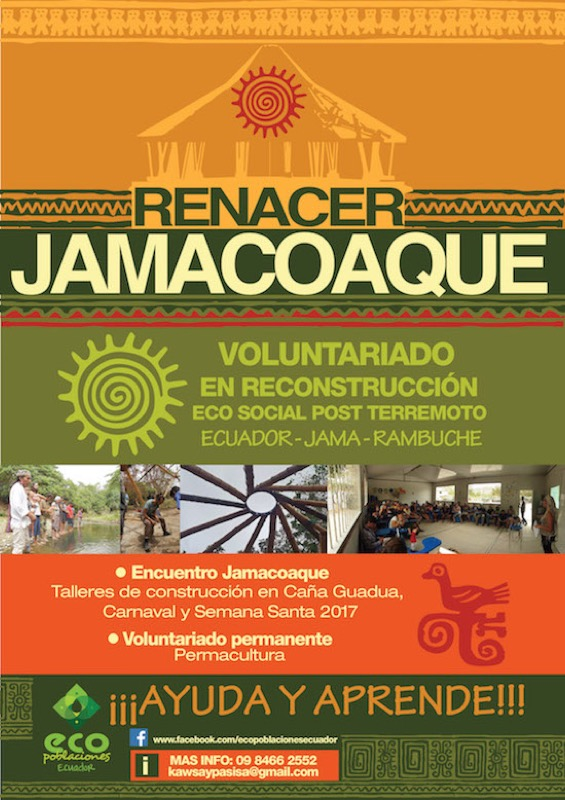
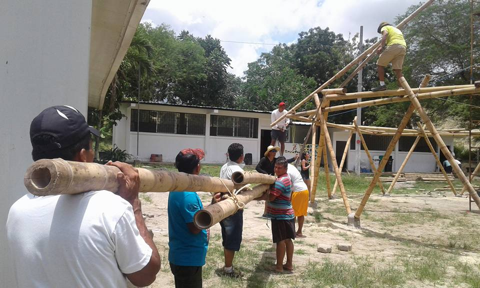
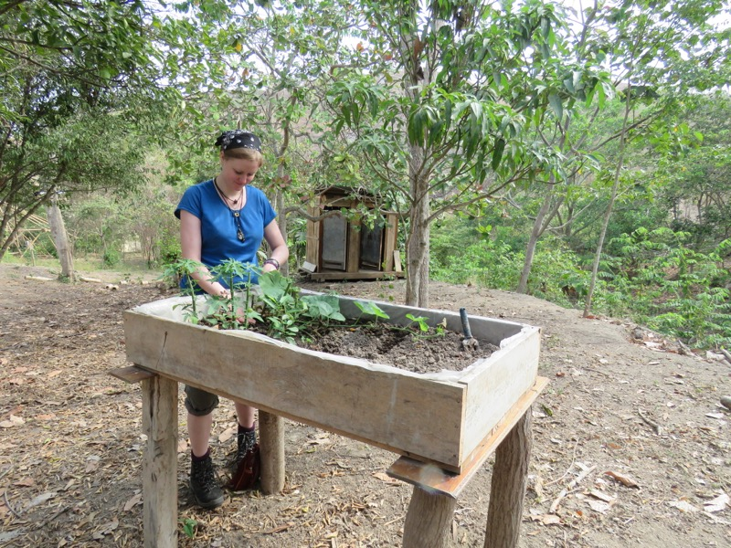
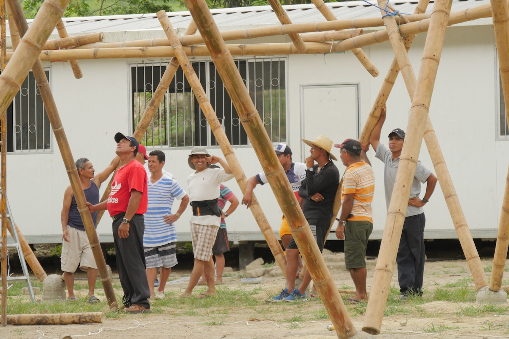
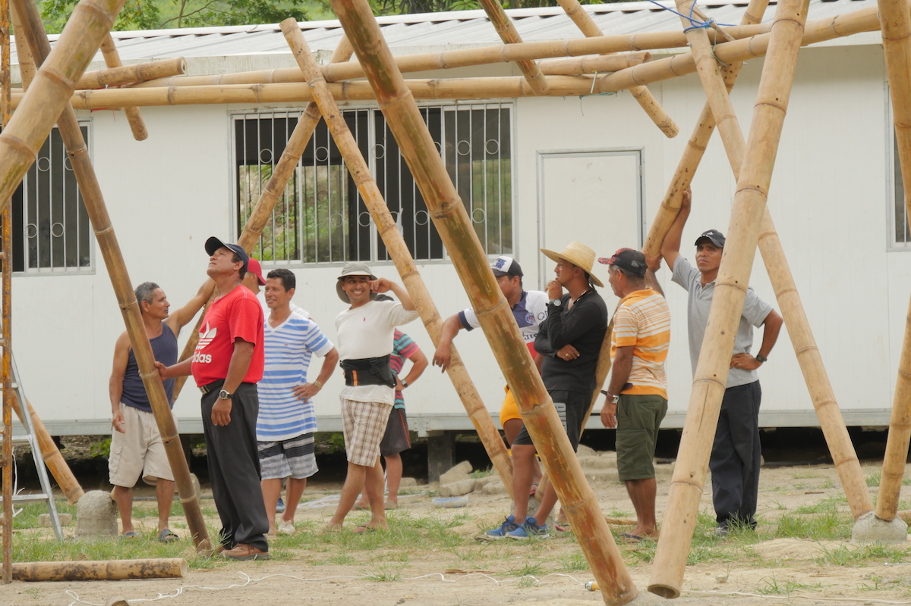

PROGRAMA DE VOLUNTARIADO
Recibimos el trabajo voluntario de personas dispuestas a aprender de la cultura local, del trabajo colaborativo y tener una experiencia de crecimiento interno, personas que quieren ser parte de la regeneración de la tierra y de la protección de lugares sagrados y claves para el sustento de la vida durante la construcción del centro de permacultura en Rambuche estaremos trabajando con bioconstrucción en bambú, permacultura, trabajo social y participativo, gestión emocional y organizativa, recuperación de la identidad mediante arte, reforestación de bosque.
Al momento nuestra organización y la comunidad no cuentan con financiamiento para mantener a los voluntarios por lo que requerimos de personas que puedan autofinanciar su participación con un costo de 50 USD semanales lo que incluye alimentación y hospedaje en carpa en el Fundo La Paz, finca que viene recibiendo más de 10 anos voluntarios para la colaboración en reforestación de la Reserva La Victoria que está ubicada en Rambuche.
Si te interesa ser parte de esta tribu regenerativa, puedes llenar la aplicación y submitir
FORMULARIO DE APLICACIÓNEl proyecto de Regeneración Ecosocial en Rambuche, construye un Centro Comunitario de Permacultura y ofrece turismo de voluntariado en el que accedes a compartir, aprender y experienciar formas sustentables de vivienda y agricultura. El proyecto no cuenta con fondos para solventar alimentación por lo que el voluntario aporta un costo de 50 usd por semana para lo mismo. En el transcurso de la construcción se darán talleres de permacultura y bioconstrucción en los que puede participar.
  
